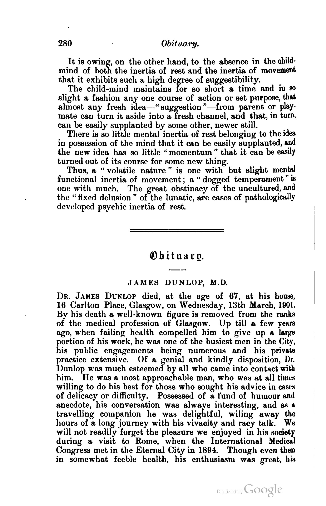
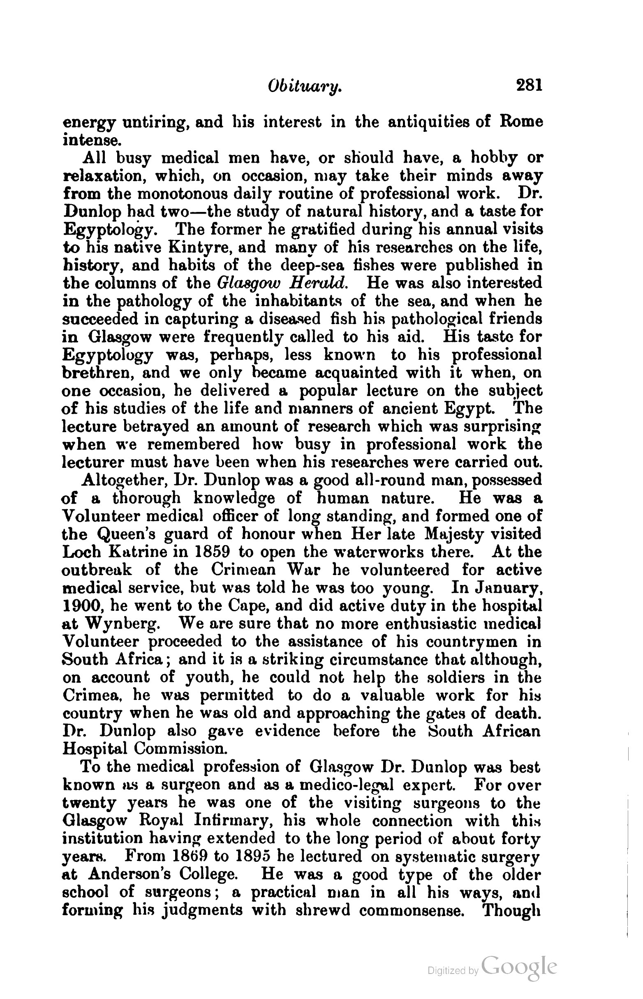
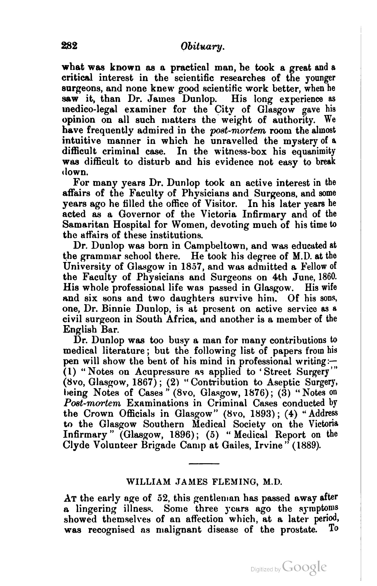

Item 9 · April 1901
Obituary: James Dunlop, M.D.
The document



This copy carries yellow highlighting or red outlining added for the book site. It is not on the original.
The second image is another side of the same document.
Tap an image to open it full size.
Transcription, word for word
Everything as written, including misspellings. [?] marks an uncertain reading. Struck-through words are marked as struck through. Notes in square brackets describe the page and are not part of it.
[Three printed pages of the Glasgow Medical Journal. The obituary begins partway down page 280. The end of the article before it and the start of the obituary after it are on the same pages and are given here too. Each scanned page carries "Digitized by Google" at the foot.] [Page 280] 280 Obituary. It is owing, on the other hand, to the absence in the child-mind of both the inertia of rest and the inertia of movement that it exhibits such a high degree of suggestibility. The child-mind maintains for so short a time and in so slight a fashion any one course of action or set purpose, that almost any fresh idea—"suggestion"—from parent or playmate can turn it aside into a fresh channel, and that, in turn, can be easily supplanted by some other, newer still. There is so little mental inertia of rest belonging to the idea in possession of the mind that it can be easily supplanted, and the new idea has so little "momentum" that it can be easily turned out of its course for some new thing. Thus, a "volatile nature" is one with but slight mental functional inertia of movement; a "dogged temperament" is one with much. The great obstinacy of the uncultured, and the "fixed delusion" of the lunatic, are cases of pathologically developed psychic inertia of rest. [Double rule] Obituary. [in Gothic lettering] JAMES DUNLOP, M.D. DR. JAMES DUNLOP died, at the age of 67, at his house, 16 Carlton Place, Glasgow, on Wednesday, 13th March, 1901. By his death a well-known figure is removed from the ranks of the medical profession of Glasgow. Up till a few years ago, when failing health compelled him to give up a large portion of his work, he was one of the busiest men in the City, his public engagements being numerous and his private practice extensive. Of a genial and kindly disposition, Dr. Dunlop was much esteemed by all who came into contact with him. He was a most approachable man, who was at all times willing to do his best for those who sought his advice in cases of delicacy or difficulty. Possessed of a fund of humour and anecdote, his conversation was always interesting, and as a travelling companion he was delightful, wiling away the hours of a long journey with his vivacity and racy talk. We will not readily forget the pleasure we enjoyed in his society during a visit to Rome, when the International Medical Congress met in the Eternal City in 1894. Though even then in somewhat feeble health, his enthusiasm was great, his [Page 281] Obituary. 281 energy untiring, and his interest in the antiquities of Rome intense. All busy medical men have, or should have, a hobby or relaxation, which, on occasion, may take their minds away from the monotonous daily routine of professional work. Dr. Dunlop had two—the study of natural history, and a taste for Egyptology. The former he gratified during his annual visits to his native Kintyre, and many of his researches on the life, history, and habits of the deep-sea fishes were published in the columns of the Glasgow Herald. He was also interested in the pathology of the inhabitants of the sea, and when he succeeded in capturing a diseased fish his pathological friends in Glasgow were frequently called to his aid. His taste for Egyptology was, perhaps, less known to his professional brethren, and we only became acquainted with it when, on one occasion, he delivered a popular lecture on the subject of his studies of the life and manners of ancient Egypt. The lecture betrayed an amount of research which was surprising when we remembered how busy in professional work the lecturer must have been when his researches were carried out. Altogether, Dr. Dunlop was a good all-round man, possessed of a thorough knowledge of human nature. He was a Volunteer medical officer of long standing, and formed one of the Queen's guard of honour when Her late Majesty visited Loch Katrine in 1859 to open the waterworks there. At the outbreak of the Crimean War he volunteered for active medical service, but was told he was too young. In January, 1900, he went to the Cape, and did active duty in the hospital at Wynberg. We are sure that no more enthusiastic medical Volunteer proceeded to the assistance of his countrymen in South Africa; and it is a striking circumstance that although, on account of youth, he could not help the soldiers in the Crimea, he was permitted to do a valuable work for his country when he was old and approaching the gates of death. Dr. Dunlop also gave evidence before the South African Hospital Commission. To the medical profession of Glasgow Dr. Dunlop was best known as a surgeon and as a medico-legal expert. For over twenty years he was one of the visiting surgeons to the Glasgow Royal Infirmary, his whole connection with this institution having extended to the long period of about forty years. From 1869 to 1895 he lectured on systematic surgery at Anderson's College. He was a good type of the older school of surgeons; a practical man in all his ways, and forming his judgments with shrewd commonsense. Though [Page 282] 282 Obituary. what was known as a practical man, he took a great and a critical interest in the scientific researches of the younger surgeons, and none knew good scientific work better, when he saw it, than Dr. James Dunlop. His long experience as medico-legal examiner for the City of Glasgow gave his opinion on all such matters the weight of authority. We have frequently admired in the post-mortem room the almost intuitive manner in which he unravelled the mystery of a difficult criminal case. In the witness-box his equanimity was difficult to disturb and his evidence not easy to break down. For many years Dr. Dunlop took an active interest in the affairs of the Faculty of Physicians and Surgeons, and some years ago he filled the office of Visitor. In his later years he acted as a Governor of the Victoria Infirmary and of the Samaritan Hospital for Women, devoting much of his time to the affairs of these institutions. Dr. Dunlop was born in Campbeltown, and was educated at the grammar school there. He took his degree of M.D. at the University of Glasgow in 1857, and was admitted a Fellow of the Faculty of Physicians and Surgeons on 4th June, 1860. His whole professional life was passed in Glasgow. His wife and six sons and two daughters survive him. Of his sons, one, Dr. Binnie Dunlop, is at present on active service as a civil surgeon in South Africa, and another is a member of the English Bar. Dr. Dunlop was too busy a man for many contributions to medical literature; but the following list of papers from his pen will show the bent of his mind in professional writing:—(1) "Notes on Acupressure as applied to 'Street Surgery'" (8vo, Glasgow, 1867); (2) "Contribution to Aseptic Surgery, being Notes of Cases" (8vo, Glasgow, 1876); (3) "Notes on Post-mortem Examinations in Criminal Cases conducted by the Crown Officials in Glasgow" (8vo, 1893); (4) "Address to the Glasgow Southern Medical Society on the Victoria Infirmary" (Glasgow, 1896); (5) "Medical Report on the Clyde Volunteer Brigade Camp at Gailes, Irvine" (1889). WILLIAM JAMES FLEMING, M.D. AT the early age of 52, this gentleman has passed away after a lingering illness. Some three years ago the symptoms showed themselves of an affection which, at a later period, was recognised as malignant disease of the prostate. To